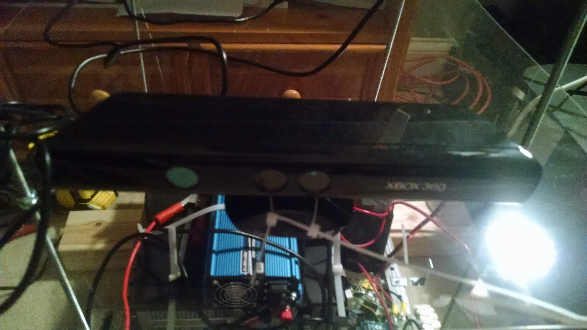
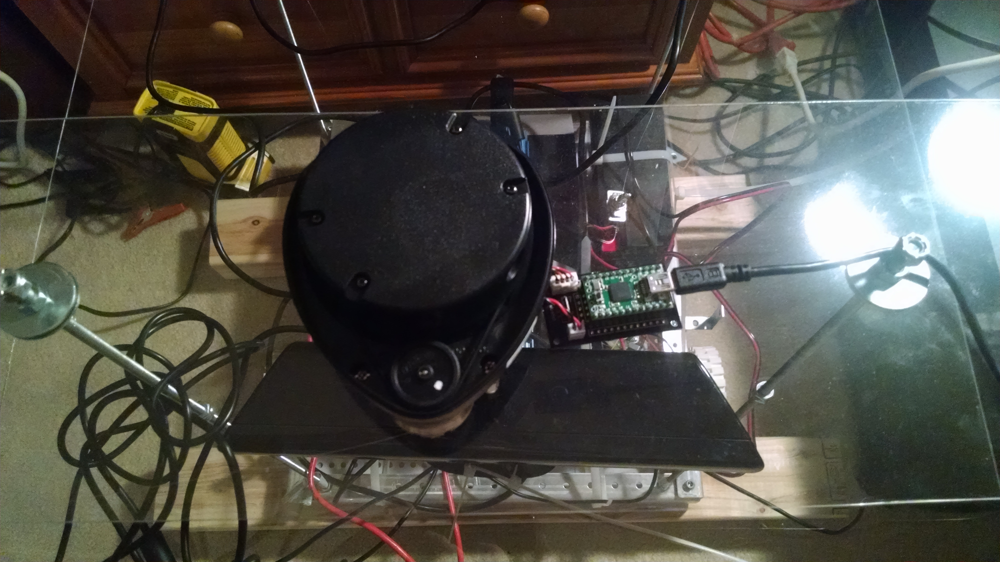

RoveME; My Large Scale ROS Robot Platform
RoveME is my ROS testbed. I hope to use it to test my own robotics algorithms in the future. It is constructed from the AndyMark basic bare-bones chassis. It is powered by a simple 12 volt battery. A 1100 watt inverter powers the kinect and the micro-desktop that controls the robot. I have a small controller board that powers the motor for the NeatoXV LIDAR and send the data over USB to the desktop computer.
RoveME is a three level robot. That is, there is the base which contains the computer, battery, and power inverter. The second level currently houses the kinect sensor, but has room for other sensors. the top level is dedicated to the NeatoXV LIDAR scanner. The first, second and third levels of the RoveME platform can be seen below respectively.
base level:

kinect level:
NeatoXV LIDAR level:
So far, the RoveME platform has successfully used SLAM to make maps of rooms and navigate through them.
Here is a write up done for RoveME.